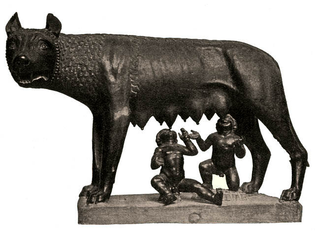

History
Origin of Rome
The city of Rome originates as a village of the Latini in the 8th century BC. At first ruled by kings, the Roman Republic is established in 509 BC. During the 5th century BC, Rome gained regional dominance in Latium, and eventually the entire Italian peninsula by the 3rd century BC. The population of the city at this point is estimated at about 300,000 people. With the Punic Wars, Rome gained dominance over the Mediterranean. Soon, Ancient Rome would displace Hellenistic Greece as the dominant world power, with the city of Rome as its capital and most dominant city for the next five centuries. After Julius Caesar's conquest of Gaul, followed by a period of civil war, the Roman Empire was established under Octavian in 27 BC. The city of Rome now surpassed a population of one million, likely the first city in history to reach this size (compared to world population of about 200–300 million at the time). At the peak of Roman imperial power in the 2nd century, the population of the city numbered some 1.6 million, a size it would never attain again until its becoming the capital of the Republic of Italy in 1946; close to 3% of the population of the empire lived within its limits. Following the Crisis of the Third Century and the transfer of the imperial capital to Constantinople in AD 330, Rome entered a period of gradual decline.
Legand of Rome
The origin of the city's name is thought to be that of the reputed founder and first ruler, the legendary Romulus. It is said that Romulus and his twin brother Remus, apparent sons of the god Mars, who were suckled by a she-wolf after being abandoned, decided to build a city. After an argument, Romulus killed Remus and named the city Rome, after himself. After founding and naming (as the story goes) Rome, he permitted men of all classes to come to Rome as citizens, including slaves and freemen without distinction.[9] To provide his citizens with wives, Romulus invited the neighboring tribes to a festival in Rome where he abducted the young women from amongst them (known as The Rape of the Sabine Women). After the ensuing war with the Sabines, Romulus shared the kingship with the Sabine king Titus Tatius.[10] Romulus selected 100 of the most noble men to form the Roman senate as an advisory council to the king. These men he called patres, and their descendants became the patricians. He created three centuries of equites named Ramnes (meaning Romans), Tities (after the Sabine king) and a third called Luceres (Etruscans). He also divided the general populace into thirty curiae, named after thirty of the Sabine women who had intervened to end the war between Romulus and Tatius. The curiae formed the voting units in the Comitia Curiata.
Roman Republic
After 500 BC, Rome joined with the Latin cities in defence against incursions by the Sabines. Winning the Battle of Lake Regillus in 493 BC, Rome established again the supremacy over the Latin countries it had lost after the fall of the monarchy. After a lengthy series of struggles, this supremacy became fixed in 393, when the Romans finally subdued the Volsci and Aequi. In 394 BC, they also conquered the menacing Etruscan neighbour of Veii. The Etruscan power was now limited to Etruria itself, and Rome was the dominant city in Latium.Also a formal treaty with the city of Carthage is reported to have been made in the end of the 6th century BC, which defined the spheres of influence of each city and regulated the trade between them.
Cola di Rienzo and the Pope's return to Rome

In 1341 the famous poet Petrarca came to the city to be crowned as Poet laureate in Capitoline Hill. Noblemen and poor people at one time demanded with one voice the return of the Pope. Among the many ambassadors that in this period took their way to Avignon, emerged the bizarre but eloquent figure of Cola di Rienzo. As his personal power among the people increased by time, on 20 May 1347 he conquered the Capitoline at the head of an enthusiast crowd. The period of his power, though very short-lived, is anyway one of the most interesting in the life of Rome in Middle Ages, as Cola tried to assure himself a renovating, almost mystical aura of a paladin of Italian independence, within a confused political dream inspired to the prestige of the Ancient Rome. Now in possession of dictatorial powers, he took the title of "tribune", referring to the pleb's magistracy of the Roman Republic. Cola also considered himself at an equal status of that of the Holy Roman Emperor. On 1 August, he conferred Roman citizenship on all the Italian cities, and even prepared for the election of a Roman emperor of Italy. It was too much: the Pope denounced him as heretic, criminal and pagan, the populace had begun to be disenchanted with him, while the nobles had always hated him. On 15 December, he was forced to flee.
Roman Empire
| Year | Activity |
|---|---|
| 753 BC | According to legend, Romulus founds Rome. |
| 753–509 BC | Rule of the seven Kings of Rome. |
| 509 BC | Creation of the Republic. |
| 390 BC | The Gauls invade Rome. Rome sacked. |
| 264-146 BC | Punic Wars. |
| 146-44 BC | Social and Civil Wars. Emergence of Marius, Sulla, Pompey and Caesar. |
| 44 BC | Julius Caesar assassinated. |